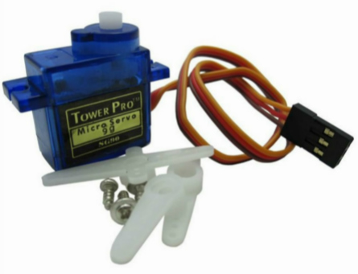
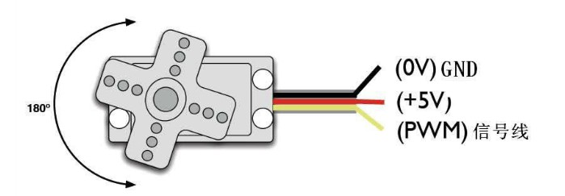
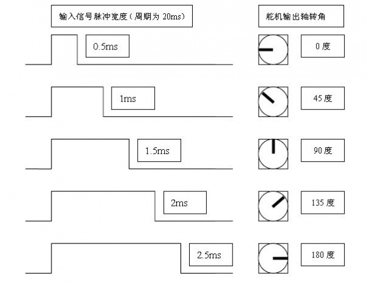

驱动舵机
舵机原理
舵机是一种位置（角度）伺服的驱动器，它由直流电机、减速齿轮组、传感器和控制电路组成的一套自动控制系统。通过发送信号，指定输出轴旋转角度，一般而言都有最大旋转角度（比如180度），与普通直流电机的区别主要在直流电机是一圈圈转动的，舵机只能在一定角度内转动，不能一圈圈转（但数字舵机可以在舵机模式和电机模式中切换）。普通直流电机无法反馈转动的角度信息，而舵机可以。
{kind=link}

标准的舵机有3条引线，分别是：地线GND(舵机连接线的棕色)、电源线Vcc（舵机连接线的红色）、控制信号线(舵机连接线的橙色)。
{kind=link}

舵机的伺服系统由可变宽度的脉冲来进行控制，控制线是用来传送脉冲的。脉冲的参数有最小值，最大值，和频率。一般而言，舵机的基准信号周期为20ms，宽度为1.5ms，这个基准信号定义的位置为中间位置，角度是由来自控制线的持续的脉冲所产生。该脉冲的高电平部分一般为0.5ms-2.5ms范围内的角度控制脉冲部分，总间隔为2ms。这种控制方法叫做脉冲调制，脉冲的长短决定舵机转动多大角度。
{kind=link}
例如：1.5毫秒脉冲会到转动到中间位置（对于180°舵机来说，就是90°位置）。当控制系统发出指令，让舵机移动到某一位置，并让他保持这个角度，这时外力的影响不会让他角度产生变化，但是这个是由上限的，上限就是他的最大扭力。除非控制系统不停的发出脉冲稳定舵机的角度，舵机的角度不会一直不变。
180度角度伺服对应的控制关系是：
{kind=link}

注意
不同舵机的脉宽范围会有所不一样，控制时需要留意！
加速度控制舵机
我们结合加速度计制作一个通过左右倾斜掌控板来控制舵机的角度:
from mpython import *
from servo import Servo
myServo=Servo(0,min_us=500, max_us=2500) #构建Servo对象
while True:
y=accelerometer.get_y() #获取Y轴的加速度
if y<=1 and y>=-1:
angle=int(numberMap(y,1,-1,0,180)) #映射Y轴加速度值
myServo.write_angle(angle) #写舵机角度
oled.DispChar("angle:%d" %angle,40,25)
oled.show()
oled.fill(0)
sleep_ms(10)
舵机和掌控板的连接需要借助掌控扩展板。你可以查阅 掌控板接口引脚说明 ,了解可供使用的PWM模拟输出的引脚 。在这里使用引脚P0。将掌控板插在掌控扩展板上，通过双母头杜邦线将舵机和扩展板进行连接，舵机上的电源线Vcc（舵机连接线的红色）连接扩展板的电源口“V”，地线GND(舵机连接线的棕色)连接扩展板的地线口“G”，控制信号线(舵机连接线的橙色)连接扩展板的引脚“0”。
使用前，导入mpython、servo模块:
from mpython import *
from servo import Servo
构建Servo对象，设置舵机脉冲宽度参数:
myServo=Servo(0,min_us=500, max_us=2500)
备注
Servo(pin, min_us=750, max_us=2250, actuation_range=180) 用来构建Servo对象，默认使用SG90舵机。不同舵机脉冲宽度参数和角度范围会有所不一样,根据舵机型号自行设置。pin 设置舵机PWM控制信号引脚，min_us 设置舵机PWM信号脉宽最小宽度，单位微秒，默认min_us=750，max_us 设置舵机PWM信号脉宽最小宽度，单位微秒，默认max_us=2250，actuation_range 设置舵机转动最大角度。
注意
您可以设置 actuation_range 来对应用给定的 min_us 和 max_us 观察到的实际运动范围值。您也可以将脉冲宽度扩展到这些限制之上和之下伺服机构可能会停止，嗡嗡声，并在停止时吸收额外的电流。仔细测试，找出安全的最小值和最大值。
当检测到掌控板在Y轴方向倾斜时（范围-1g 至+1g），将Y轴的加速度值（范围-1至1）映射在舵机输出轴旋转角度（（范围0至180））上:
if y<=1 and y>=-1:
angle=int(numberMap(y,1,-1,0,180))
输出舵机角度并在OLED显示屏上显示:
myServo.write_angle(angle) #写舵机角度
oled.DispChar("angle:%d" %angle,40,25)
oled.show()